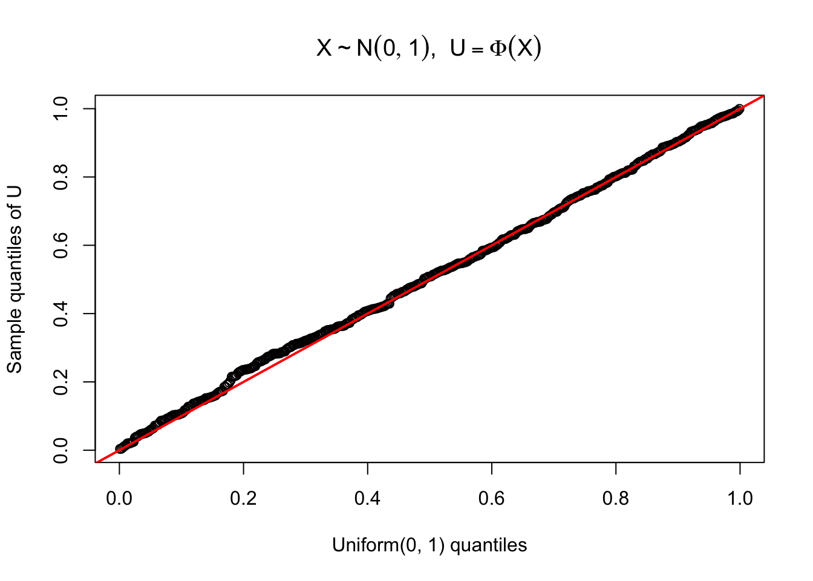
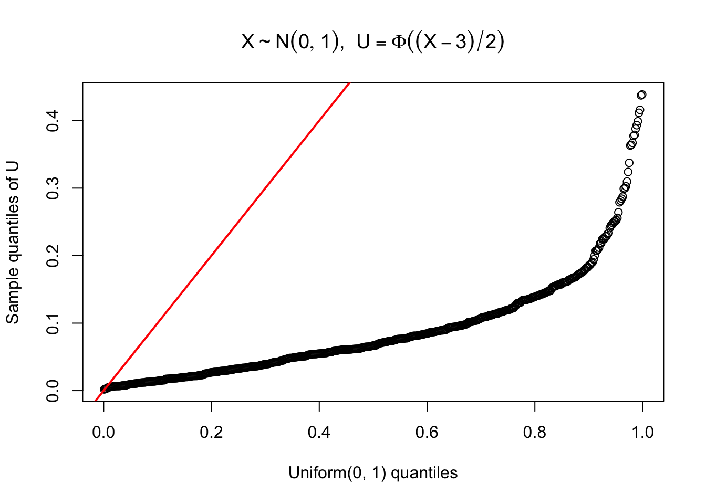
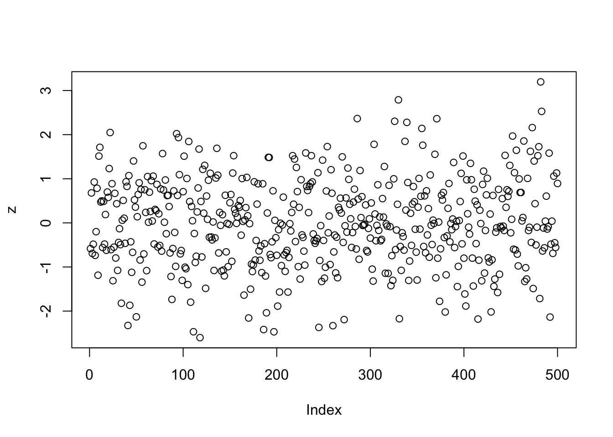
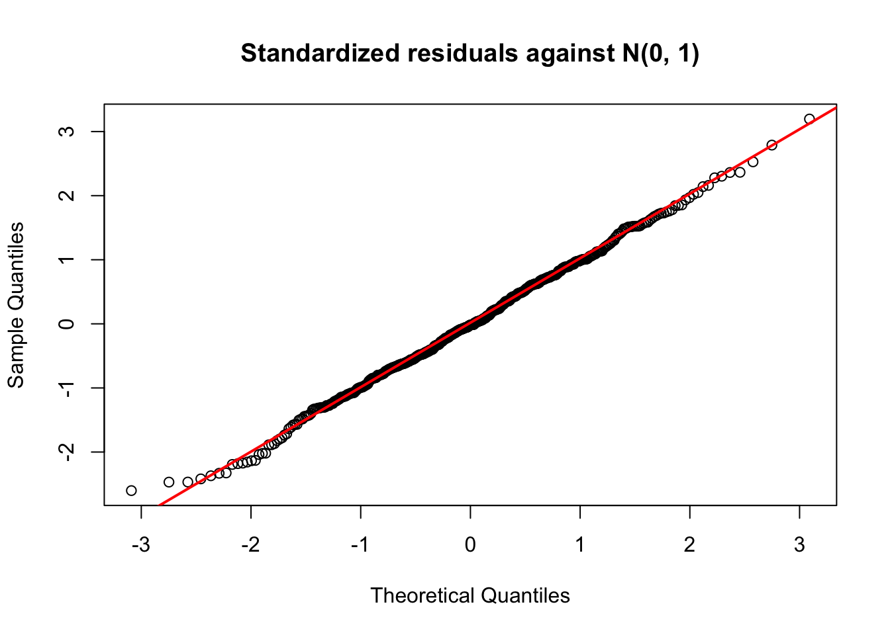
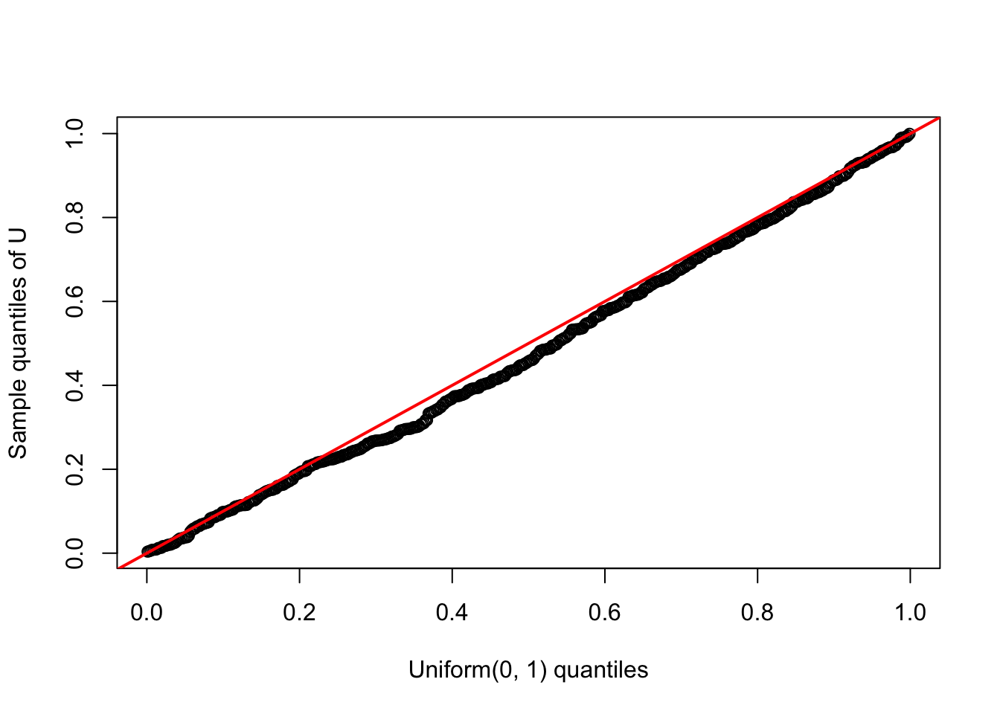

\(P(U \le u) = u\) is exactly the uniform CDF, \(U \sim \mathrm{Unif}(0,1)\).
Case 1: If the data \(x_1, ..., x_n\) truly came from the assumed distribution, \(x_1, ...,x_n\) observed values are random draws from the distribution of X. Therefore, the CDF applied to each point of the data must follow Unif(0,1).
Case 2: If the data \(x_1,..., x_n\) are actually realizations of a distribution, \(x_1,..., x_n \sim G\), which is different from the assumed distribution, F, the \(u_i\) are still realizations of \(U=F_X(X)\), but \(X \sim G\).
but \[P\bigl(X \le F^{-1}(u)\bigr) = G\bigl(F^{-1}(u)\bigr).\]
The distribution of U is only uniform, \(P(U \le u) = u\) only if \(G = F_X\).
If \(G \neq F_X\), the values \(u_i = F_X(x_i)\) are samples of \(G\bigl(F_X^{-1}(u)\bigr)\), not Uniform(0,1).
<Remark>
In fact, F and G are fully specified CDFs, each evaluated at a particular parameter value. The same distribution family with two different parameters results in two different CDFs. The probability integral transform is uniform only at the true value.
If the assumed model is correct and the sample is sufficient, the posterior samples of parameters concentrate near the true parameter. Evaluating the CDF of the assumed model at different values of the posterior draws of parameters, if the outcomes of applying the specified CDF on the data departs from uniform(0,1) we can conclude that the assumed model does not represent the true distribution of the data.
However, the inverse is not necessarily true - we cannot conclude an adequate fit based on uniform outcomes of applying posterior based CDF.
1. Example: Normal Distribution
First, examine the case that the model indeed represents the data appropriately.
Draw 500 samples of the “true” distribution, N(0,1), to represent the data.
Assume that we did indeed use N(0,1) as our likelihood. To assess the fit of the data to our model, check whether the data applied onto the assumed CDF follows uniform(0,1).
## let x be the observed data n <-500x <-rnorm(n) ## apply the CDF of our assumed, specified model to the observationsu <-pnorm(x)## compare these values of u to theoretical Uniform(0,1)unif_q <-qunif(ppoints(n))qqplot(unif_q, u,main =expression(X %~%N(0, 1) *", "* U ==Phi(X)),xlab ="Uniform(0, 1) quantiles",ylab ="Sample quantiles of U")abline(0, 1, col ="red", lwd =2)

Now, examine the case that the model is misspecified.
Draw 500 samples of the “true” distribution, N(0,1), to represent the data.
Assume that we used N(3, 2^2) as our likelihood. To assess the fit of the data to our model, check whether the data applied onto the assumed CDF follows uniform(0,1).
## let x be the observed data n <-500x <-rnorm(n, mean =0, sd =1) ## apply the CDF of our assumed, specified model to the observationsu <-pnorm(x, mean =3, sd =2)## compare these values of u to theoretical Uniform(0,1)unif_q <-qunif(ppoints(n))qqplot(unif_q, u,main =expression(X %~%N(0, 1) *", "* U ==Phi((X-3)/2)),xlab ="Uniform(0, 1) quantiles",ylab ="Sample quantiles of U")abline(0, 1, col ="red", lwd =2)

2. Linear Regression
2.1 Frequentist Linear Regression
Let the data contain three covariates with an outcome vector.
the values of \(\hat z_i\) should lie close to N(0, 1).
z <-residuals(fit) / sigma_hatplot(z)

In the frequentist context, this is the ordinary residual checking.
z_hat <-residuals(fit) / sigma_hatqqnorm(z_hat, main ="Standardized residuals against N(0, 1)")qqline(z_hat, col ="red", lwd =2)

2.2 Bayesian Linear Regression
In the frequentist context, the parameter estimates contain a single set. For the normal linear model, \(\hat\beta\) is both the least-squares estimate and the maximum likelihood estimate. The residuals are therefore evaluated at a single set of estimates.
The bayesian check uses the same concept, but rather than a single \((\hat\beta, \hat\sigma)\), the draws from the posterior are plugged in. For each draw \((\beta^{(t)}, \sigma^{(t)})\), we can find the standardized residual at each data point, \(z_i^{(t)}\). If the standardized residuals were evaluated at the true parameter values, they would follow a standard normal distribution under the assumed model. In practice, however, the true parameters are unknown, and we instead evaluate these quantities using posterior draws.Importantly, although an individual posterior draw need not equal the true parameter value, Johnson (2007) shows that evaluating a pivotal quantity at a posterior draw preserves its known marginal reference distribution under the joint Bayesian model. This provides a theoretical justification for using pivotal quantities in Bayesian goodness-of-fit assessment.
## posterior draws draws <-as_draws_df(fit_b)beta_draws <-as.matrix(draws[, c("b_Intercept", "b_x1", "b_x2", "b_x3")])sigma_draws <- draws$sigmaT <-nrow(beta_draws)fitted_draws <- X %*%t(beta_draws) # n by TZ <-t((y - fitted_draws) /rep(sigma_draws, each = n))U <-pnorm(Z)dim(Z)
[1] 4000 500
The dimension of Z matrix is number of iterations (4 chains, 2000 iterations, half of the iterations discarded), 4000, by the length of data, 500.
Randomly selecting a posterior draw,
t <-1qqplot(qunif(ppoints(n)), U[t, ],xlab ="Uniform(0, 1) quantiles",ylab ="Sample quantiles of U")abline(0, 1, col ="red", lwd =2)

We can see that the percentiles U indeed follow Uniform(0,1).
Remark: Standardized Residuals as Pivotal Quantity
A pivotal quantity is a function of the data and the parameter whose distribution is known and (this known distribution) does not depend on the unknown parameter. The advantage of pivotal quantity is that its sampling distribution is known and does not depend on unknown model parameters.
In the linear regression example, for one observation, \(y_i\), the standardized residual
has a standard normal distribution under the assumed model when evaluated at the data-generating parameter values. Applying the standard normal CDF gives \[
u_i(\beta, \sigma) = \Phi (z_i (\beta, \sigma)) = \Phi (\frac{y_i-x_i^T\beta}{\sigma}) \sim \mathrm{Uniform}(0,1)
\]
which follows a Uniform(0,1) distribution.
This provides a natural basis for assessing model adequacy. Rather than directly comparing observed responses to a model whose distribution depends on unknown parameters, we can examine transformed observations against a common, parameter-free reference distribution.
In Bayesian inference, we can evaluate these transformations using draws from the posterior distribution. Johnson (2007) establishes the theoretical connection between posterior evaluation of pivotal quantities and their reference distributions under the joint Bayesian model.
The practical motivation is therefore to construct diagnostics whose reference distributions are known, even when the original model contains unknown parameters. Departures from these distributions may provide evidence of model misspecification.
Importantly, the pivotal property alone does not guarantee that every diagnostic computed from posterior draws has a known null distribution. The construction and calibration of the overall diagnostic must also be considered.